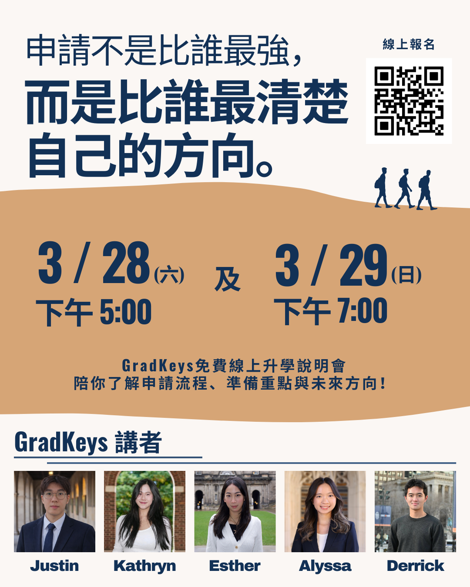

若學生未能錄取事先共同設定的目標學校，我們將提供退款機制。 這不只是對學生的信心，也是對我們顧問能力與輔導品質的承諾。
我們會依照學生的背景、優勢與申請方向，安排最適合的顧問， 確保每一份申請都能展現個人特色，並在正確的面向上被看見。
我們長期與美國及英國大學的招生官保持聯繫， 持續掌握最新且準確的申請趨勢與審查重點。
從探索方向到完成申請，我們會一路陪伴你走完整個過程
GradKeys 將舉辦兩場免費升學資訊講座，幫助學生與家長更深入了解我們的輔導方式， 以及整體大學申請流程。
在講座中，我們將分享如何建立合適的選校清單、準備推薦信、 規劃標準化考試時程，以及課外活動如何共同形塑完整的申請故事。

快速了解我們的服務內容與顧問方式
GradKeys 由五位來自世界頂尖大學的在學大學生共同創立。 我們自己不久前才親身經歷國際學生申請流程，因此更了解現在的申請趨勢與學生真正會遇到的問題。
我們也持續透過電子郵件、校園交流與實際對話和各校招生官保持聯繫， 以掌握國際申請標準的變化與常見申請誤區。
此外，我們將對學生與服務的信心落實到制度中。 在雙方共同確認條件後，我們會提供結果承諾與退款機制， 這代表我們願意對自己的輔導品質負責。
大學通常會從九年級開始檢視學生的成績與活動發展， 但有方向感的準備往往可以更早開始。 及早建立學術與課外活動方向，能幫助學生逐步累積更完整、更有連貫性的申請輪廓。 我們通常建議學生在國中後期或最晚十一年級前開始規劃。
當然，每位學生的情況都不同。 我們提供免費諮詢，讓學生與家長一起評估目前的準備狀況， 再決定最合適的開始時間與服務內容。
SAT 與 TOEFL 課程可以單獨購買，也可以搭配我們的升學顧問方案一起進行。 我們會依照學生目前的英文程度與學術背景，調整合適的教學內容與節奏。
對於 TOEFL，我們也可在雙方同意的條件下提供分數保障， 若未達目標分數，將提供退款。
以 Everything Package（高二升高三至高三）為例， 若學生在四所目標校與兩所夢想校中皆未獲錄取， 我們將退還 20% 的方案費用。
具體適用條件與細節，會在免費諮詢時與家長及學生完整說明。 這項制度反映了我們對輔導方法的信心，也展現我們對學生成果的承擔。
當然不是。雖然 Everything Package 以八所學校為基本規劃（2 所保底、4 所目標、2 所夢想），但我們理解每位學生的情況與策略都不同。 實際上，我們五位創辦人當年申請的學校數量都超過八所。
因此，學校名單可以依照學生的背景、目標與申請策略進一步調整， 不會被固定格式綁住。
不限次數顧問會議代表學生可透過預約系統自由安排會議， 只需至少提前三天預約即可。 除了學生與家長需參與的一次正式會談外，其他時間都可依需求安排。
無論是討論選校策略、修改文書、規劃活動方向， 或處理任何申請流程中的問題， 我們都會在方案期間內持續提供支持，不以次數設限。